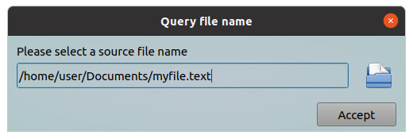
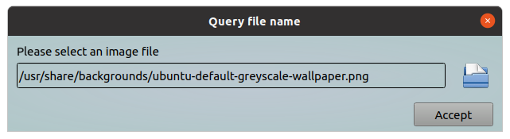
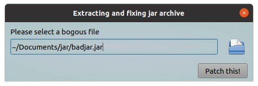
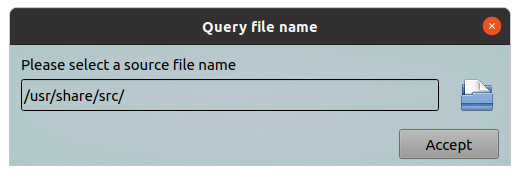
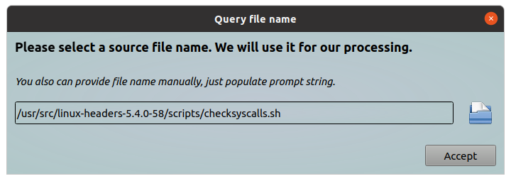

This tool will show a dialog in which you can specify a file name, or you can use a standard "Open File" dialog to select a file.
This file name will returned back to requesting program. Also you can specify a message text to clarify you request for user.
All parameters should be provided via command line.
Options:
| Short | Long | Description |
|---|---|---|
| -h | --help | Will show help and exit |
| -m | --message "Clarifying text" | A text message, it should clarify you request |
| -f | --file-mask "*.ext" | A filter mask witch will used during file selection. For example you can allow to select only *.dat files |
| -d | --directory "/base/directory" | A base directory. In this directory initially will open query file dialog |
| -t | --dtitle "New dialog title" | A text string which will show in dialog header |
| -b | --btntext "New btn label" | This text will show on "Accept" button, i.e. you can rename this button |
| -x | --sizex window_width | This parameter allow you to customize window width (default 500 pixels, minimum 300) |
| -y | --sizey window_height | This parameter allow you to customize window height (default 120 pixels, minimum 120) |
Examples:
Query any file
#!/bin/bash
# some actions here
file_name=$(ytools-query-file-name --message "Please select a source file name")
echo "You selected the following file: " ${file_name}
As a result following window will appear:

Query an image file
Files can be png, bmp, jpg or gif format. File formats are divided on 2 groups - lossless and lossy.
#!/bin/bash
# some actions here
file_name=$(ytools-query-file-name -m "Please select an image file" -f "*.png *.bmp ;; *.jpg *.gif")
# Make a thumbnail
convert ${file_name} -resize 128x128 thumb_$(basename ${file_name})
As a result following window will appear:

Query an jar archive
Dialog title will changed to "Extracting and fixing jar archive"Open file dialog will select *.jar files
Accept button will renamed to "Patch this!".
#!/bin/bash
# some actions here
file_name=$(ytools-query-file-name -m "Please select a bogous file" -f "*.jar" --btntext "Patch this!" --dtitle "Extracting and fixing jar archive" )
# extracting files
jar -vxf ${file_name}
# patching
sed -i 's/\$BASE_LIB/ -Wl,--no-as-needed \$BASE_LIB/g' ./bin/install.sh
# put patched file back to jar
jar -vuf ${file_name} /bin/install.sh
As a result following window will appear:

Change default directory and query any file
In this example query file dialog will opened from /usr/share/src directory.
#!/bin/bash
# some actions here
file_name=$(ytools-query-file-name --message "Please select a source file name" --directory "/usr/share/src")
echo "You selected the following file: " ${file_name}
As a result following window will appear:

Advanced using
In this example we are using HTML markup language to improve out text request. Also we changing window size for better view and setting up default directory to "/usr/src"
#!/bin/bash
# some actions here
file_name=$(ytools-query-file-name -x 700 -y 200 --message "<h3>Please select a source file name. We will use it for our processing.</h3><br><i>You also can provide file name manually, just populate prompt string.</i>" --directory "/usr/src")
echo "You selected the following file: " ${file_name}
# Other actions with selected file
As a result following window will appear:

Show help
This command will show a help message.
ytools-query-file-name --help
As a result following information will shown:
*** ytools-query-file-name - a simple program which allow you to use query dialog for select a file name. *** Usage: ./ytools-query-file-name [options] -h, --help Display this help and exit. -m, --message "Clarifying text" Text string which will show in dialog (default "Please specify a file name"). Please use it for clarifying you request. You can use HTML markup language for better view. -f, --file-mask "*.ext" A filter mask witch will used during file selection. For example you can allow to select only *.dat files. -d, --directory "/base/directory" In this directory initially will open query file dialog. -t, --dtitle "New dialog title" This text will show in dialog header (default "Query file name"). -b, --btntext "New btn label" Accept button will labeled with this text (default "Accept"). -x, --sizex window_width This parameter allow you to customize window width (default 500 pixels, minimum 300). -y, --sizey window_height This parameter allow you to customize window height (default 120 pixels, minimum 120).